84旧版人物scene公版✓ 判官过审本内特的“愤怒”：对平庸的悲悯
🎬 他写这书不是为了教你成功，而是因为他看透了那种“活着却未存在”的绝望。
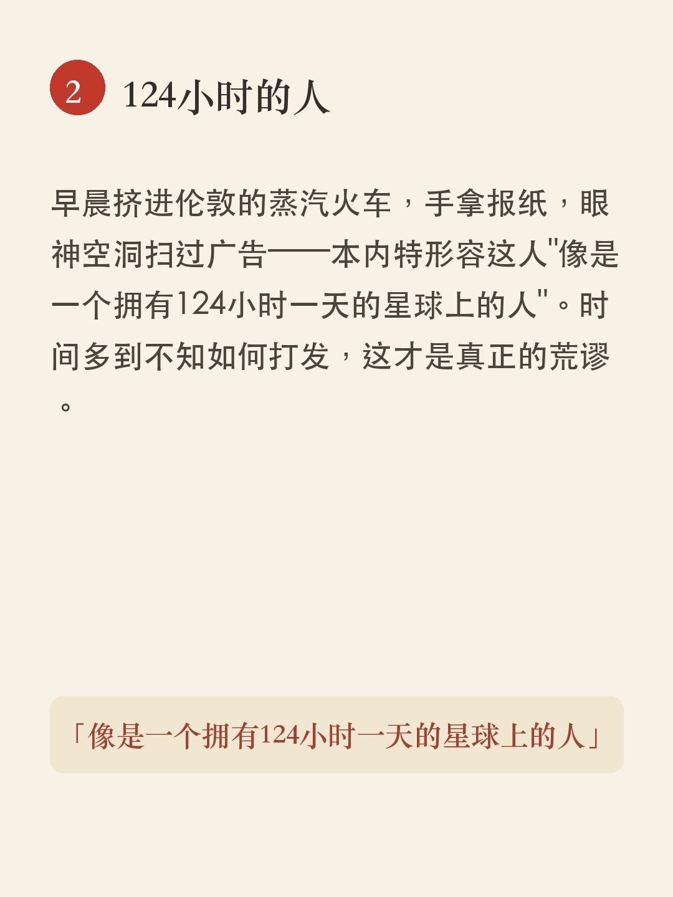
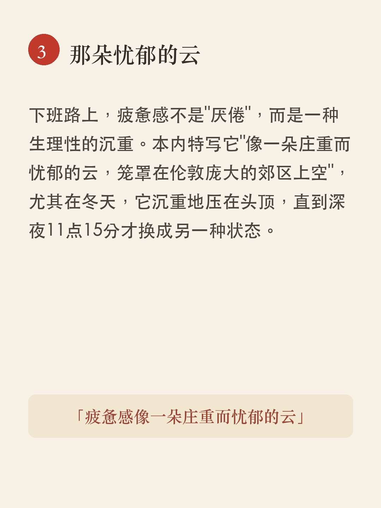
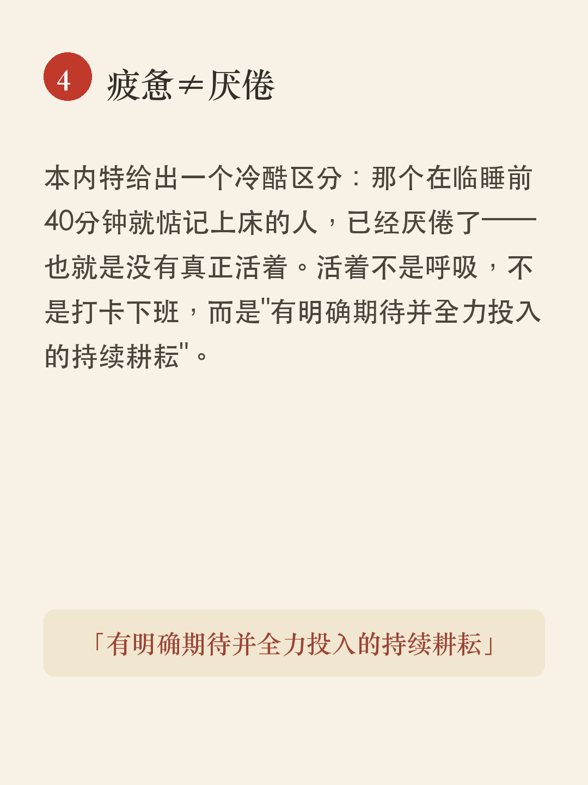
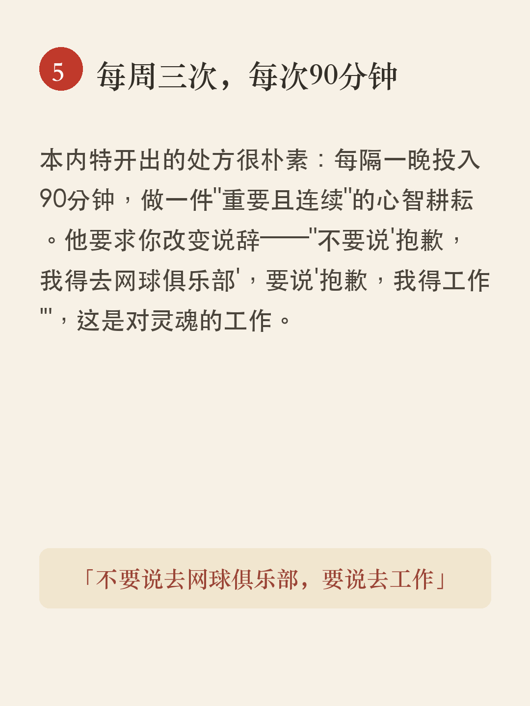
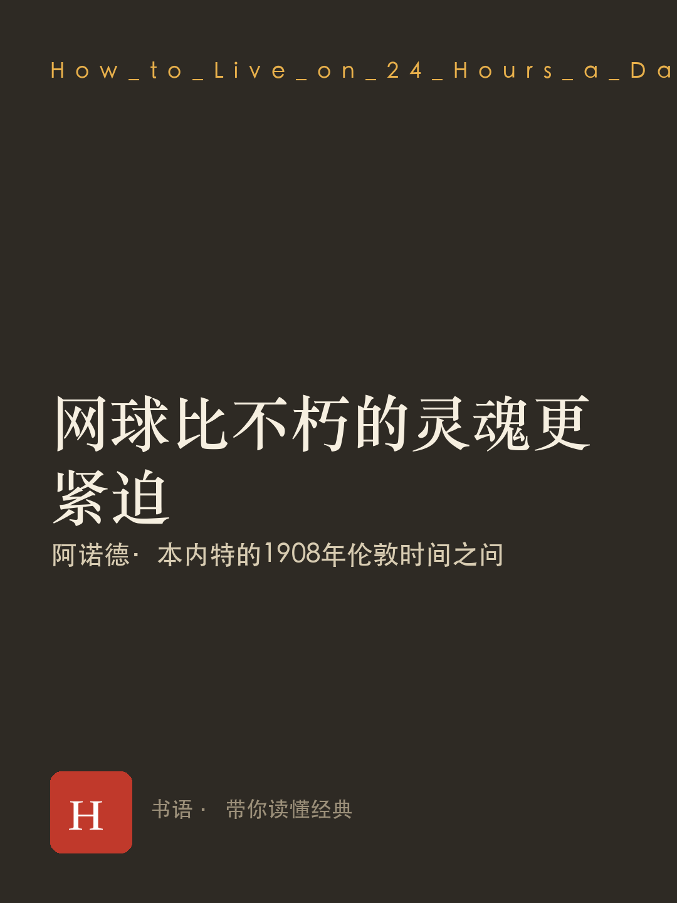
📄 配文·钩子（不剧透）
1908年的伦敦通勤族，深夜11点15分才意识到自己从未活过＋ 讲透版·自成一体（小红书图文）
本内特在《如何度过一天24小时》里区分了两种状态：疲惫是生理的，厌倦是存在性的。那个在临睡前40分钟就急着上床的人，已经厌倦了——也就是说，他只是在呼吸，而不是活着。这不是成功学的劝诫。本内特甚至先自曝"我是个狂热的报纸读者"，以示公允。他的处方是具体的：每隔一晚投入90分钟（每周三次），做一件对你而言真正重要的事——他称之为"对灵魂的工作"。一百多年前蒸汽火车时代的上班族困境，今天依然精准。那朵"庄重而忧郁的云"，换成了地铁里刷手机的空洞眼神；但本内特的诊断从未过时：平庸不是失败者的标签，而是一种慢性的窒息。我们不是"时间的沙阿"，时间并不比别人多。真正的问题是：你有没有一件事，是值得你用"工作"来定义的？
口播稿全文
大家好，我是小鲸。
一个人是不是真的在活着，不看他有多忙、有多累，而看他下了班之后，还有没有一件真心期待的事。一百多年前，作家阿诺德·本内特就把这件事看透了，他在《如何度过一天24小时》里写下一句反讽：“网球比不朽的灵魂更紧迫。”
听起来很荒谬，对吧？灵魂怎么会有优先级？但本内特是个老练的小说家，他太懂这种荒谬了。书里写得极细：早晨挤进火车，手里拿着报纸，眼神空洞地扫过广告，“像是一个拥有124小时一天的星球上的人”。
接着，他描绘了下班后的状态：“疲惫感像一朵庄重而忧郁的云，笼罩在伦敦庞大的郊区上空。”
注意这个比喻。这云不是“厌倦”，而是生理性的“疲惫感”（原文：the tired feeling）。本内特指出，这种疲惫是在回家路上逐渐累积的，尤其在冬天，它沉重地压在头顶。
直到深夜11点15分，当你开始琢磨“该去睡觉了”，那才是另一种状态——“厌倦”。本内特给出了一个冷酷的定义：那个在临睡前40分钟就开始想着上床的人，已经厌倦了——也就是没有真正活着。
注意这个区分。活着不是呼吸，也不是打卡下班，而是有“明确期待并全力投入的持续耕耘”。
书里有个对比特别扎心。你下班后累得像条狗，回家只想瘫着；但如果你约了朋友看戏，或者为了业余合唱团排练，哪怕再累，你也愿意奔波。为什么？因为当你有东西可期待时，“那种想法会给整天带来一种光辉和更强烈的生命力”。
本内特不是在教你成功学，也不是在骂你懒惰。他甚至先自曝其短：“我是个狂热的报纸读者……提这个是为了避免你们说我偏见。”这种克制，让他显得像个老朋友，而不是导师。
他的处方很朴素：入门时，每隔一晚投入90分钟（即每周三次、每次90分钟），做一件“重要且连续”的心智耕耘。这并非一个随意的数字游戏，而是为了在保留其他生活空间的同时，强行划出一块神圣的时间。
他说：“不要说‘抱歉，我得去网球俱乐部’，要说‘抱歉，我得工作’。”这里的“工作”，是指对你灵魂的工作。
我们常以为平庸是失败者的标签。但在本内特眼里，平庸是一种慢性的窒息。他悲悯那些在通勤路上把时间散得像东方君主一样挥霍的人，不是因为钱，而是因为那是“无价的珍珠”。
他说：“你并不是‘时间的沙阿’，你的时间并不比别人多。”
这本书写于一百多年前，但那种“活着却未存在”的绝望，今天依然精准地刺中我们。
本内特没有给我们打鸡血，他只是轻轻提醒：别让网球赢了灵魂，因为一旦输了，你就真的只是在那朵忧郁的云里，慢慢枯萎了。
82旧版映照scene公版✓ 判官过审穿着西装戴破帽：你对时间的挥霍
🎬 如果金钱和时间都是收入，为什么你算钱算得精，却把时间当垃圾扔？
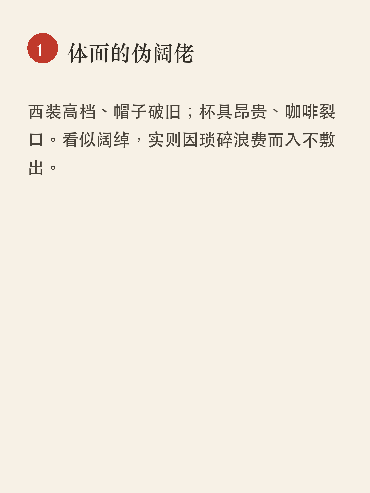
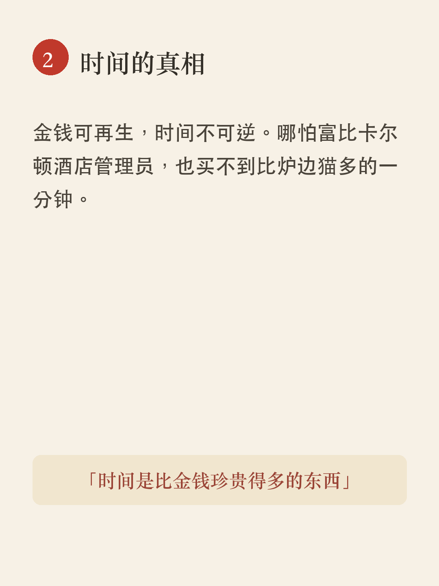
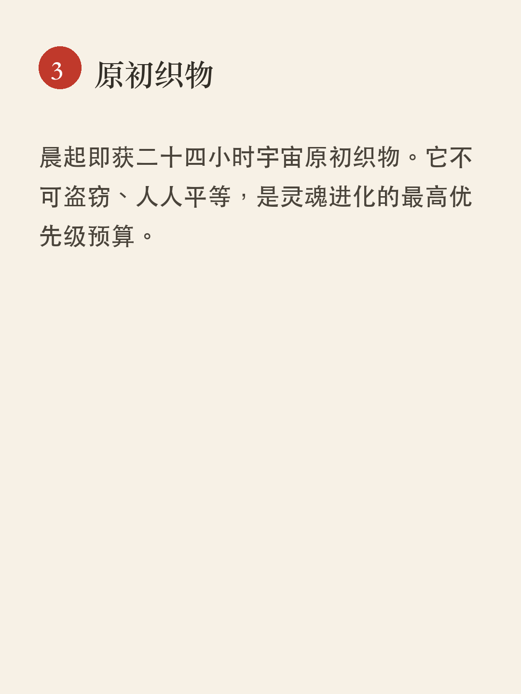
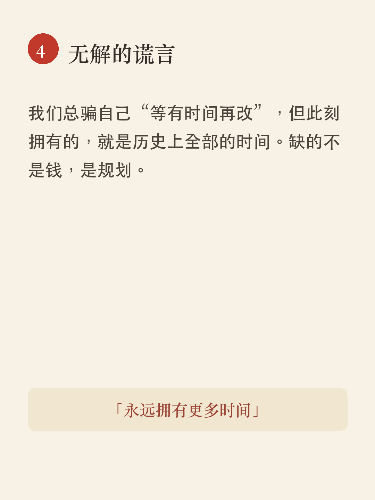
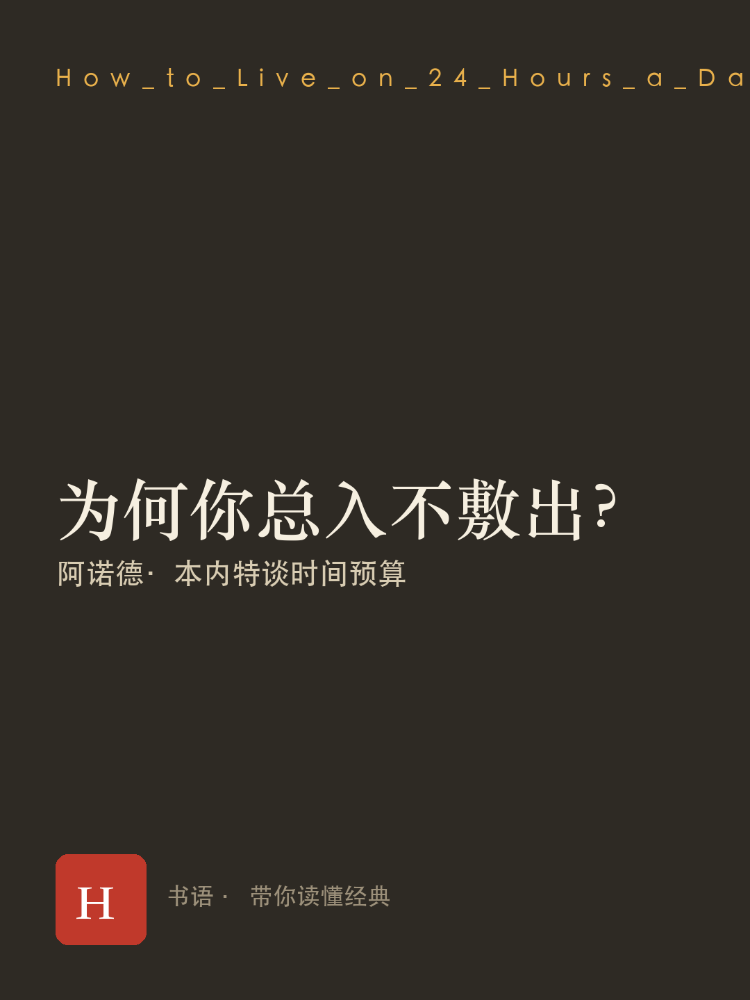
📄 配文·钩子（不剧透）
报纸教人怎么花固定的钱，却没人教你怎么过二十四小时。＋ 讲透版·自成一体（小红书图文）
1908年的阿诺德·本内特在《如何度过一天24小时》里，戳穿了一个体面的谎言：我们以为穷是因为钱不够，其实是因为把时间当成了可以随意挥霍的垃圾。
书中有个极具画面感的讽刺：有人穿着高档西装却戴破帽，用昂贵玻璃杯装劣质肉。本内特指出，这种人并非真的富有，而是把收入“一点点地浪费掉了”。
今天的大多数人也一样。我们精于计算金钱的收支，却对每天早晨醒来时，那笔“神奇装满”的二十四小时视而不见。金钱是可以再生、借贷甚至掠夺的资源，而时间是“残酷受限”的原初织物。天才与傻瓜分到的时间完全平等，但只有少数人将其视为最高优先级的预算项目。
本内特冷峻地指出：我们永远不会拥有更多时间。此刻正在流逝的，就是历史上曾经有过的全部时间。当你抱怨没时间时，不妨看看自己：是不是又在用昂贵的玻璃杯，盛着劣质的肉？
口播稿全文
大家好，我是小鲸。
你算钱算得精，却把时间当垃圾扔。
阿诺德·本内特在《如何度过一天24小时》里，讲了一个特别讽刺的画面。他说，你身边总有那种人，穿着高档的新西装，戴着破旧的帽子；系着华丽的领结，裤腿却松垮肥大。请客吃饭时，杯具是昂贵的切面玻璃，肉却是劣质的；咖啡壶是土耳其式的，杯子却裂了缝。
这种人并不真的挥霍无度，收入也足够体面，但他总是入不敷出。本内特一针见血地指出：问题不在于赚得少，而在于他把收入一点点地浪费掉了（原文：fritters his income away）。
我们大多数人都是这种“阔佬”。
你看报纸，全是教人怎么靠一笔固定的钱生活的文章。大家对此兴致勃勃，争论不休。但有一件事，你从未见过相关文章：如何靠每天二十四小时来生活。
本内特说，这句老话“时间就是金钱”，其实低估了时间。时间是比金钱珍贵得多的东西（原文：Time is a great deal more than money）。
为什么？因为金钱是可以再生的。如果你钱不够，你可以去赚，可以去借，甚至可以去偷。但时间不同。哪怕你拥有卡尔顿酒店衣帽间管理员般的财富，你也买不到比我多一分钟的时间，就像你买不到那只炉边猫拥有的时间一样。
每天早晨醒来，是一个奇迹。你的钱包里 （神奇地装满）了二十四小时的宇宙原初织物。这是最珍贵的财产，且不可盗窃，人人平等。天才不会因此多得一小时，傻瓜也不会被少给一小时。
这本该是最高优先级的预算项目。我们要从中纺出健康、快乐、金钱、尊重，甚至灵魂的进化。
然而现实是，金钱远比时间常见（原文：Money is far commoner than time）。金钱堆积如山，而时间供给虽然规律，却残酷地受限（原文：cruelly restricted）。
如果一个人无法通过增加收入来平衡账目，他会感到焦虑；但如果一个人无法让每天的二十四小时覆盖应有的支出，他的人生就会彻底混乱（原文：muddle one's life definitely）。
最荒谬的是什么？是我们总对自己说：“等我有更多时间，我就改变这一切。”
本内特冷冷地回答：我们永远不会拥有更多时间。我们现在拥有的，就是历史上曾经有过的全部时间。
你现在的处境，就像那个穿新西装戴破帽子的人。你以为只要再给一点钱，你就能过得更好；但实际上，你缺的不是钱，而是对那二十四小时“收入”的敬畏与规划。
当你下次抱怨没时间时，不妨看看自己：是不是又在用昂贵的玻璃杯，盛着劣质的肉？
87旧版无配音映照scene公版✓ 判官过审那个把牛排煎老的服务员：用每日自我反思，优雅化你的脾气
🎬 发火是一笔亏本买卖：愤怒不仅无用且昂贵，它消耗体面却换不来实质收益。
🎵 音频待生成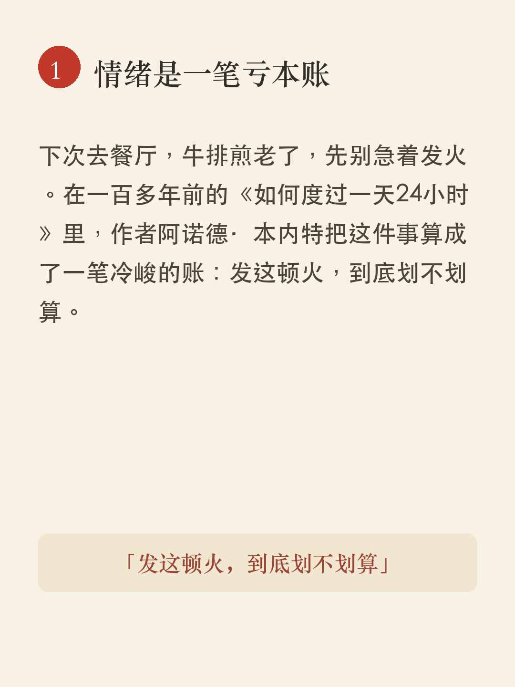
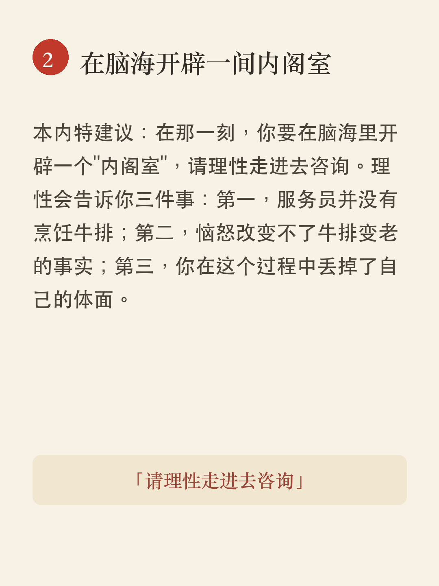
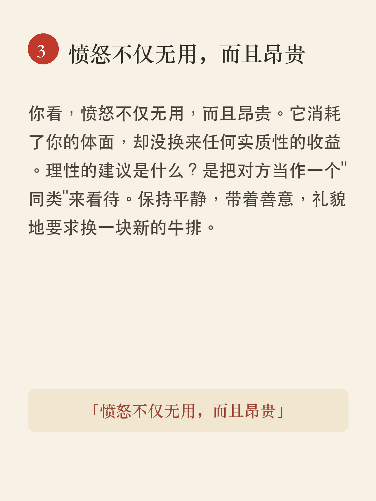
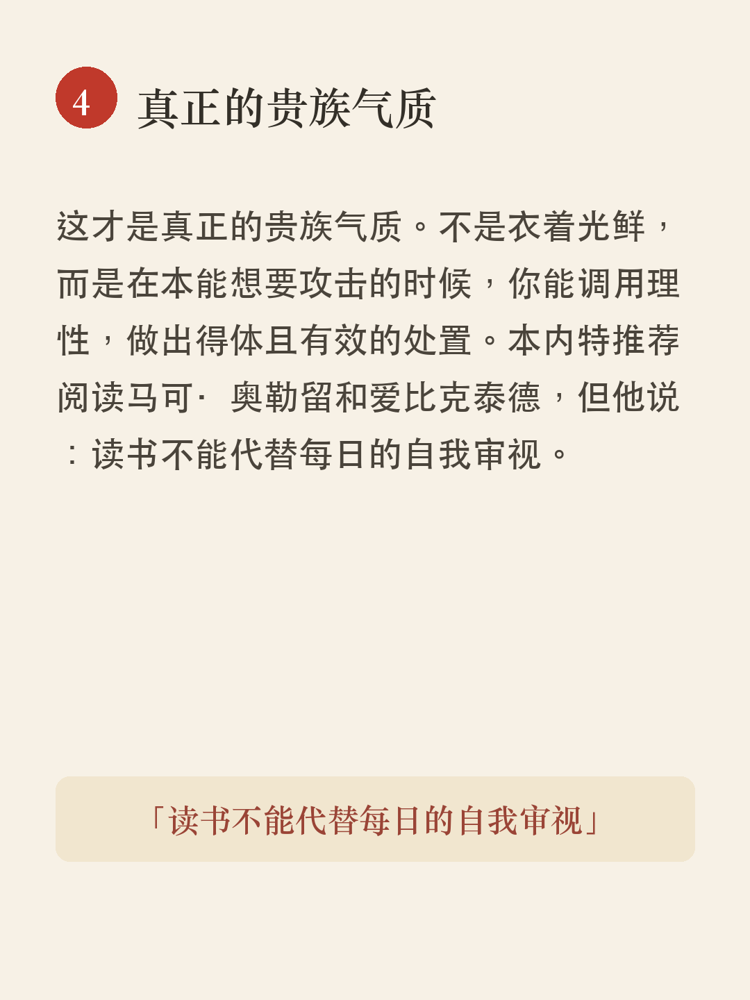
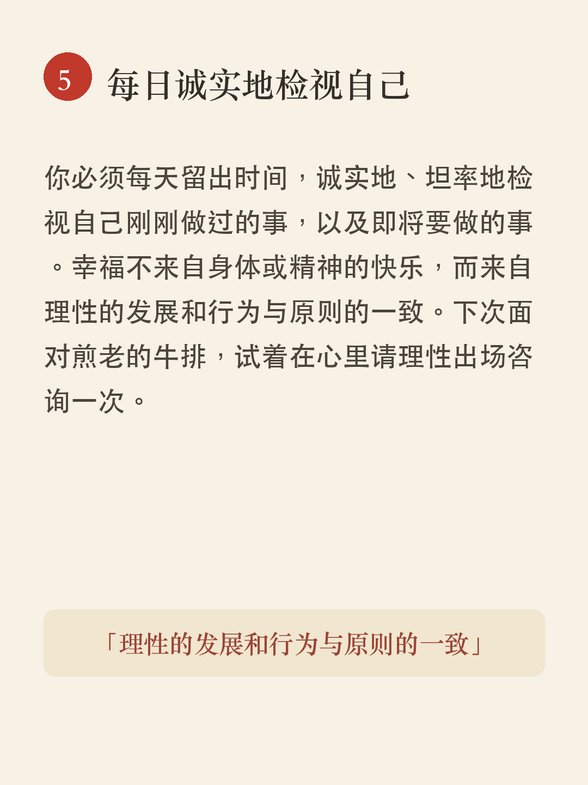
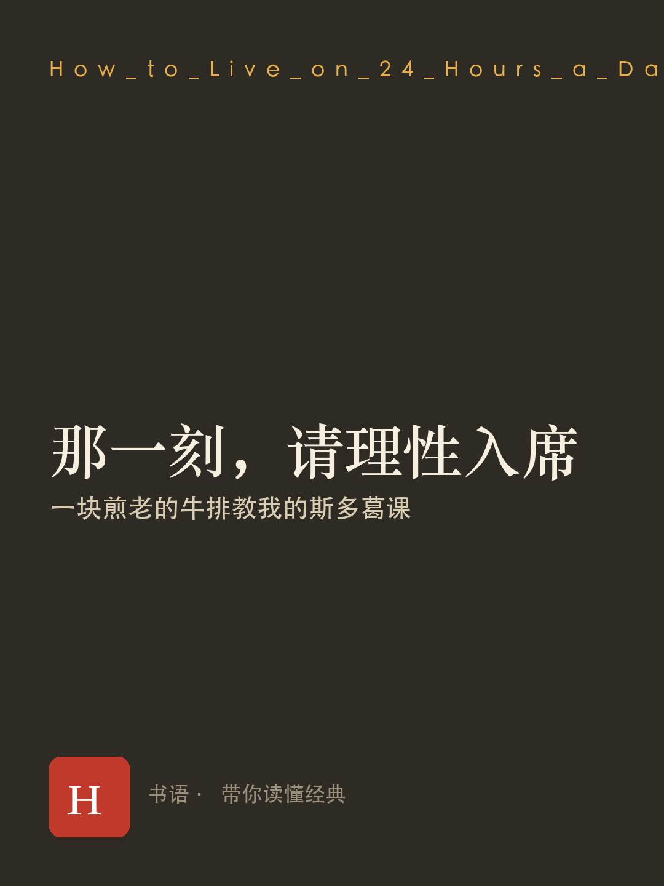
📄 配文·钩子（不剧透）
1908年的伦敦餐厅里，一位绅士因为牛排煎老而发火——但他不知道，自己正在做一笔亏本的交易。＋ 讲透版·自成一体（小红书图文）
阿诺德·本内特在1908年的伦敦写下《如何度过一天24小时》，他观察到当时那些善意之人最缺的，不是知识，而是反思的心境。我们总以为自己是理性的，但其实更多是被本能驱使的。书里用了一个具体的场景来说明：当牛排煎老时，你的愤怒毫无用处，却让你在旁人眼里像个傻瓜，还让服务员心情糟糕。本内特建议我们在那一刻请理性入席——不是压抑情绪，而是把它拿出来算一算。这让我想到书里那句：幸福不来自身体或精神的快乐，而来自理性的发展和行为与原则的一致。这种"理性入席"的能力，需要每日的自我审视来练习。哪怕你带着马可·奥勒留的书去旅行，那也不够。你必须每天留出时间，直面那个可能让你不适的自己。
口播稿全文
下次去餐厅，如果牛排煎老了，别急着发火。
先在心里请“理性”出来坐一会儿。
这听起来像是一种修养，但在一百多年前的《如何度过一天24小时》里，作者阿诺德·本内特把它拆解成了一笔极其冷峻的账：发这顿火，到底划不划算。这种把情绪拿出来用理性算一算的功夫，古罗马有一派哲学家最擅长——斯多葛学派，本内特用的正是他们的方法。
书里专门用了一整章讲这种“反思的心境”。作者说，当代那些善意之人最缺的不是知识，而是这种心境。我们总以为自己是理性的，但其实我们更多是被本能驱使的。
书里有这样一个具体的场景：当你因为牛排太老而对服务员发火时，你其实是在做一笔亏本的交易。
作者建议，在那一刻，你要在脑海里开辟一个“内阁室”，请理性走进去咨询一下。理性会告诉你三件事：
第一，服务员并没有烹饪牛排，也没有控制火候；
第二，即便全责在他，你的恼怒也无益，改变不了牛排变老的事实；
第三，也是最重要的一点——你在这个过程中，丢掉了自己的尊严，在旁人眼里像个傻瓜，还让服务员心情糟糕，却对解决任何问题毫无帮助。
你看，愤怒不仅无用，而且昂贵。它消耗了你的体面，却没换来任何实质性的收益。
那么，理性的建议是什么？
是把你把对方当作一个“同类”来看待。保持平静，带着善意，然后礼貌地要求换一块新的牛排。
这才是真正的贵族气质。不是衣着光鲜，而是在本能想要攻击的时候，你能调用理性，做出得体且有效的处置。
为了练习这种能力，作者推荐我们阅读马可·奥勒留和爱比克泰德。但他特别强调了一句话：读书不能代替每日的自我审视。
他说，哪怕你带着马可·奥勒留的书去旅行，那也不够。你必须每天留出时间，诚实地、坦率地检视自己刚刚做过的事，以及即将要做的事。直面那个可能让你不适的自己。
幸福不来自身体或精神的快乐，而来自理性的发展和行为与原则的一致。
所以，下次面对那块煎老的牛排，或者生活中任何让你本能想反击的瞬间，试着在心里请理性出场咨询一次。
你会发现，那种掌控感，比发泄出来更让人踏实。
86旧版无配音洞见scene公版✓ 判官过审自尊：所有改变的基石
🎬 为什么你总是半途而废？因为一次失败就摧毁了你的自信底座。
🎵 音频待生成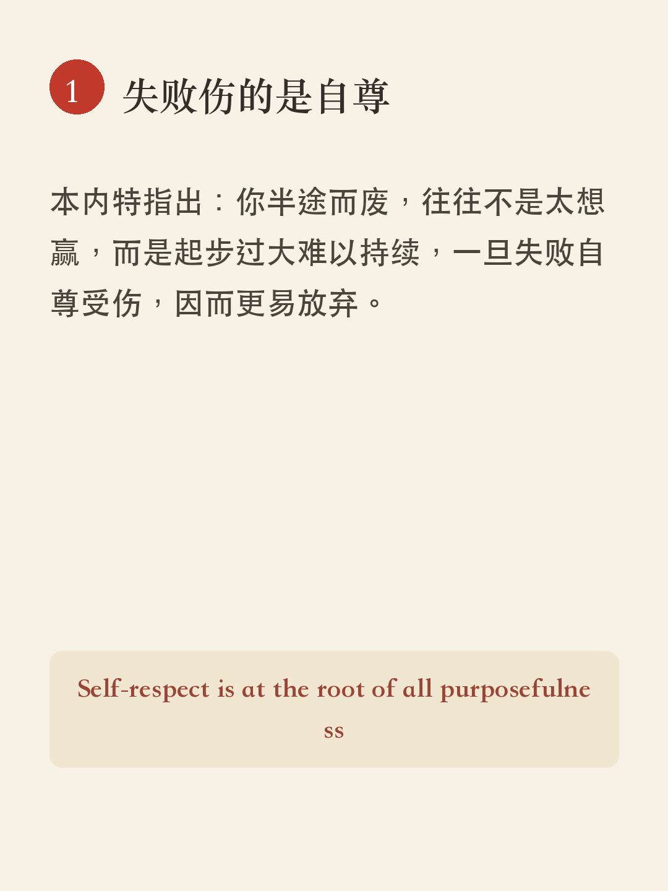
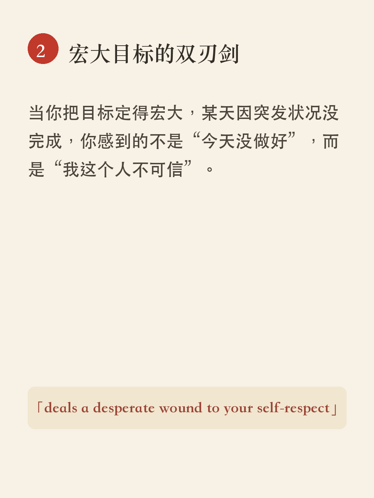
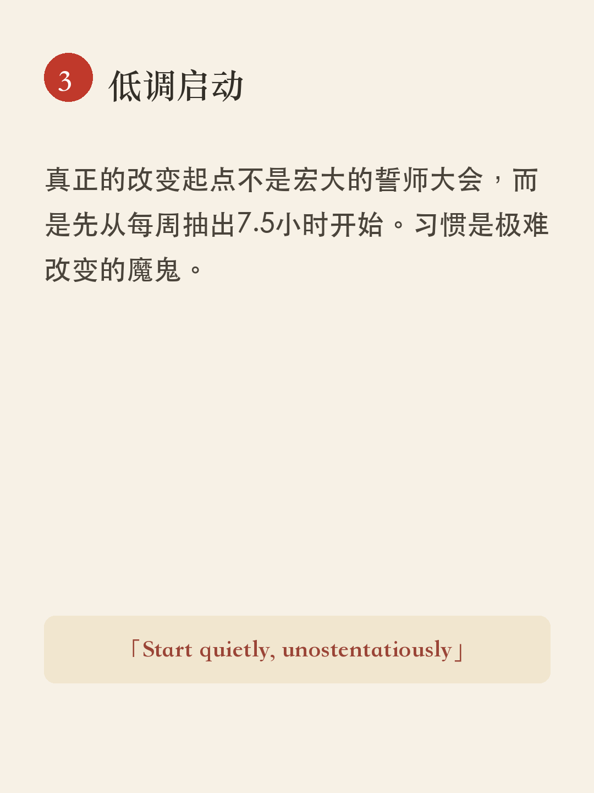
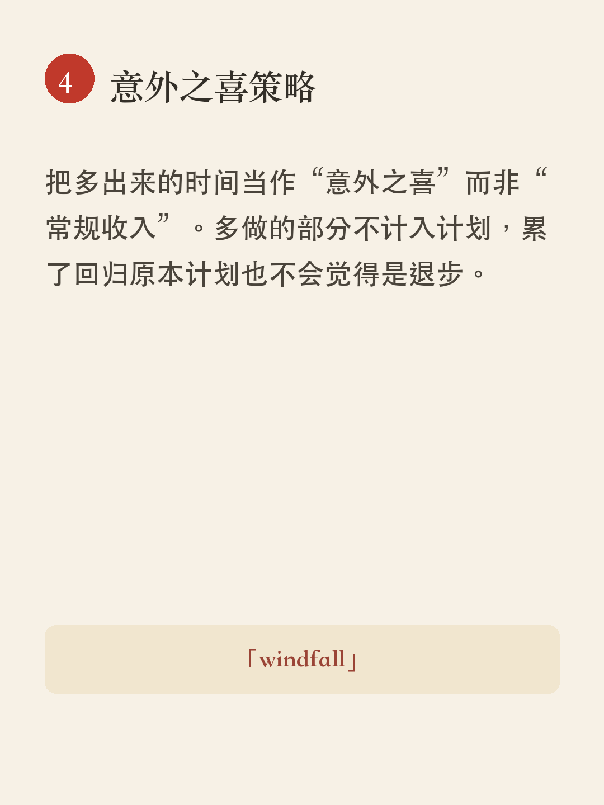
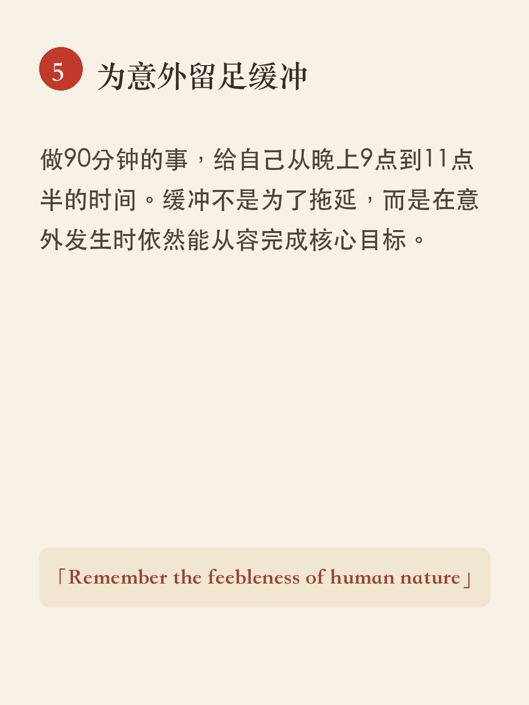
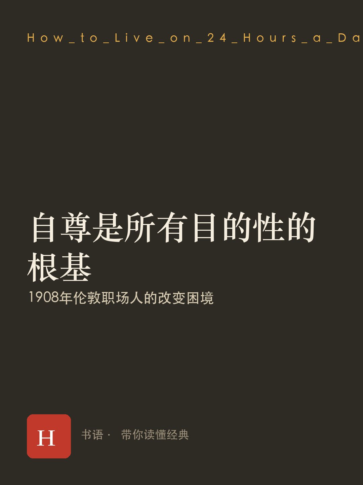
📄 配文·钩子（不剧透）
1908年，一位伦敦上班族发现：所有半途而废的真正原因，藏在一个被我们忽视的心理机制里。＋ 讲透版·自成一体（小红书图文）
阿诺德·本内特在1908年写《如何度过一天24小时》时，观察到一个至今仍普遍存在的困境：我们以为坚持不下去是因为缺乏毅力或方法，但真相恰恰相反——是你起步太大、难以持续，一旦失败自尊受伤，从而更易放弃。
他写道：“自尊是所有目的性的根基，而在一个精心策划的事业中遭遇失败，会对你的自尊造成绝望的打击。”这句话的关键词是“绝望的打击”——不是普通的挫折感，而是对自我信任的根本动摇。当你把目标定得宏大完美，某天因突发状况没完成，你感到的不是“今天没做好”，而是“我这个人不可信”。这种自我怀疑会迅速蔓延，让之前的努力都成了笑话，于是干脆放弃。
本内特提出的解法是“低调启动”和“意外之喜”策略：把自我提升的正式计划限定在每周6天，第7天不设程序；多做的部分不计入计划，告诉自己这是额外的馈赠。这样当你累了回归原本的6天计划时，不会觉得自己是“backslider”——一个在中文里很难找到对应词的词，它暗示的是堕落者、退步者，带着道德审判的意味。
这个策略的核心是保护自尊：通过小胜积累底气，用一次次“我没搞砸”的微小确认，而非热血，来驱动持续行动。三个月里认真完成7.5小时的积累，你才更有底气去“唱得更响”。
这个洞见在今天依然锋利：为什么我们收藏了无数自律方法论却依然拖延？为什么每次“重新开始”都更难？因为每次失败都在磨损自尊，直到你连试的勇气都没有。本内特的答案是：不要一开始就追求完美闭环，先保护好你脆弱的自尊。
口播稿全文
我们常以为，坚持不下去是因为缺乏毅力，或者方法不对。但《如何度过一天24小时》这本书里有一个非常反直觉的洞见：你半途而废，往往不是因为太想“赢”，而是因为你起步过大、难以持续，一旦失败自尊受伤，因而更易放弃。
作者阿诺德·本内特在书里讲了一个很沉重的心理机制。他说：“自尊是所有目的性的根基（Self-respect is at the root of all purposefulness），而在一个精心策划的事业中遭遇失败，会对你的自尊造成绝望的打击（deals a desperate wound）。”
注意这里的逻辑：当你把目标定得宏大、完美，一旦某天因为突发状况没完成，你感到的不是“今天没做好”，而是“我这个人不可信”。这种自我怀疑会迅速蔓延，让你觉得之前的努力都成了笑话，于是干脆放弃。
所以，真正的改变，起点不是宏大的誓师大会，而是“低调启动”（原文：Start quietly, unostentatiously）。
本内特建议我们，先别想着改造整个人生，先从每周抽出7.5小时开始。这听起来很少，对吧？但他指出，习惯是极难改变的魔鬼（原文：habits are the very dickens to change），任何改变，哪怕是变好，都伴随着不适和牺牲。如果你试图一下子颠覆旧生活，失败几乎是必然的，而失败会反噬你的自信。
因此，他提出一个保护自尊的策略：把多出来的时间当作“意外之喜”（原文：windfall），而不是“常规收入”。
什么意思？比如你把自我提升的正式计划限定在每周6天，第7天不设程序、随性休息。如果你某天特别有状态，多做了点事，别把它算进你的里。你要告诉自己：这是额外的馈赠。这样，当你哪天累了，回归到原本的6天计划时，你不会觉得自己更“贫”，不会觉得自己是个“退步者/堕落者”（原文：backslider）。
这种心理上的“冗余设计”，是为了保护你脆弱的自尊。他甚至在晚间任务上建议留出巨大的缓冲期：“记住人性的弱点，记住意外的可能。”比如你要做90分钟的事，请给自己从晚上9点到11点半的时间。这不是为了拖延，而是为了在意外发生时，依然能从容地完成核心目标，从而保住那份“我能做到”的掌控感。
当你在三个月里认认真真地完成了这7.5小时的积累，你才更有底气去“唱得更响”（原文：sing louder），告诉自己你能做什么。
所以，不要一上来就追求完美闭环。先保护好自己的自尊，用小胜积累底气。因为持续行动的动力，不来自热血，而来自一次次“我没搞砸”的微小确认。
82旧版无配音故事scene公版✓ 判官过审亚瑟的悲剧：别把日程表当宗教
🎬 有个男人为了守时，遛狗都要卡着秒针走，结果毁掉了他的生活。
🎵 音频待生成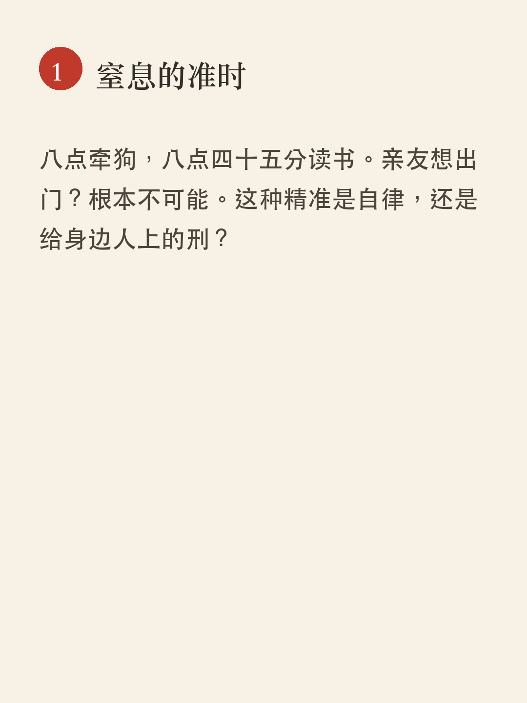
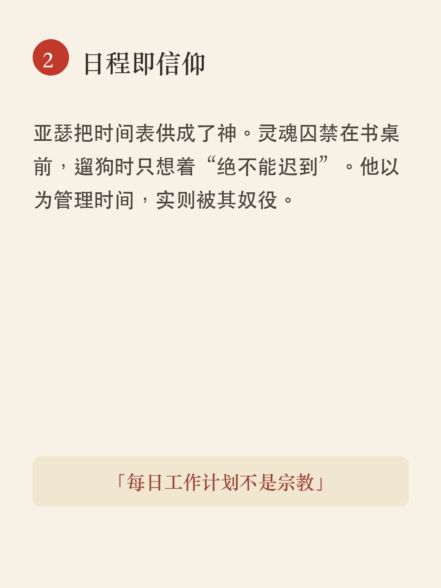
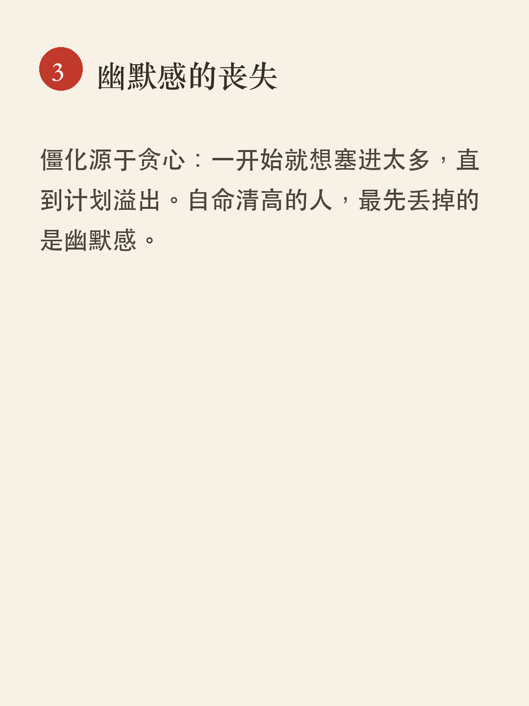
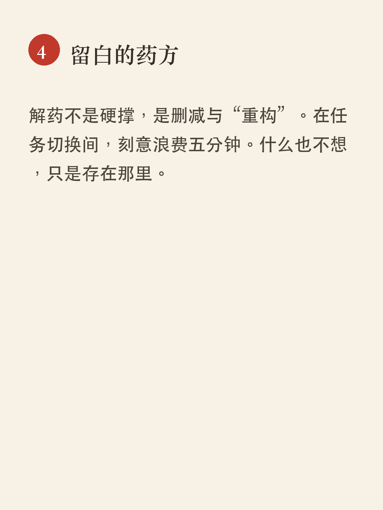
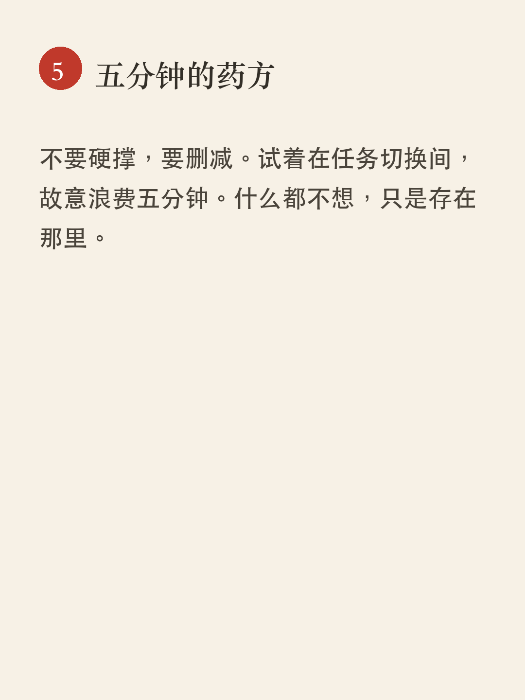
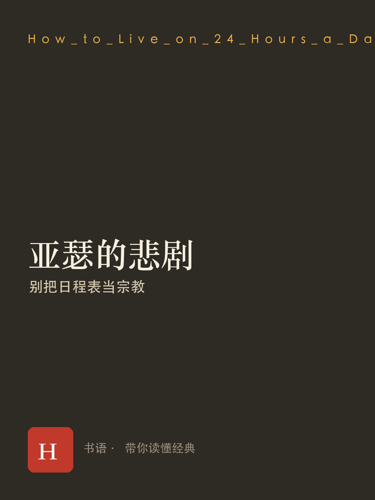
📄 配文·钩子（不剧透）
8:00牵狗，8:45读书。亚瑟把时间表供成了神，却把生活过成了一座监狱。＋ 讲透版·自成一体（小红书图文）
我们常误以为“严丝合缝”是时间管理的最高境界，但阿诺德·本内特在1908年的《如何度过一天24小时》里，讲了一个叫亚瑟的男人，给了这届忙碌现代人一记清醒的耳光。
亚瑟的生活像瑞士表一样精密。他每天八点整牵狗，八点四十五分准时翻开书本。听起来是自律典范？不，作者称其为“滑稽的悲剧”。因为这种僵化挤压了所有“临时”的可能——受难的妻子想出门散步？门都没有。亚瑟的灵魂在遛狗时，已经囚禁在了八小时后的书桌前。他丢失了最重要的东西：幽默感。
为什么我们会变成这样？根源往往不是执行力太强，而是最初的“贪心”。本内特指出，邪恶在于一开始就试图塞进太多事，直到计划溢出，最终让日程表从工具异化为暴君。
怎么解？不是咬牙硬撑，而是做减法。书中给出的具体药方是：在任务切换的缝隙里，故意浪费五分钟。
比如拴好狗到翻开书之间，不要急着进入下一项，而是彻底放空这五分钟。这种“刻意的浪费”，是为了找回对生活的掌控感，而不是表演给世界看的勤奋。记住：计划是用来服务生活的，别让它成为生活的宗教。
口播稿全文
你有没有见过那种人，活得像一块精密的瑞士表？
书里写了一个叫亚瑟的男人。他的生活严谨到令人窒息。每天早晨八点整，他准时牵着狗出门散步；八点四十五分，他准时翻开书本开始阅读。
听起来很自律，对吧？但这种僵化的日程，给身边的亲友带来的是负担，是一出“滑稽的悲剧”。
书中写道，有一位“受难的妻子”曾抱怨道：“哦，不，亚瑟总是八点带狗去散步，他总是八点四十五分开始读书。所以我们要……根本不可能。”
那个省略号里藏着的，是无数被日程表挤压掉的临时安排或社交，都被挡在了门外。
为什么？因为对亚瑟来说，这个时间表不是工具，而是宗教。
作者阿诺德·本内特一针见血地指出：“每日的工作计划不是一种宗教。”（原文：A programme of daily employ is not a religion.）
当一个人把日程表当成信仰时，他很可能流于自命清高，而这种人常常丢失幽默感。书里定义了一种叫“说教者”的人——那种自以为是、充满优越感的蠢货。他丢了一件重要的装备——幽默感。
亚瑟在遛狗的时候，心里想的根本不是路边的风景或狗的尾巴，而是：“我必须八点四十五分开始读书，绝不能迟到。”
他在八点整牵着狗走在街上，灵魂却已经囚禁在了八点四十五分的书桌前。这种“紧迫感的蔓延”，让他的生活变成了一座监狱。他以为自己在管理时间，其实是被时间表奴役了。
更讽刺的是，这种僵化往往源于最初的贪心。作者说，邪恶的根源不在于你坚持执行时缺乏弹性，而在于你一开始就试图塞进太多东西，直到计划溢出。
如果你发现自己也像亚瑟一样，被日程表勒得喘不过气，怎么解？
不是咬牙硬撑，而是删减。唯一的药方是“重构计划，尝试更少”。但请记住：对过量计划要删减，对已慎选的任务要坚持——一旦决定完成某任务，就要不惜乏味与厌倦去完成它。
如果实在改不了，还有一个有趣的“止痛法”：在任务切换之间，故意浪费五分钟。
比如，在拴好圣伯纳犬和打开书本之间，花整整五分钟，完全清醒地、刻意地去“浪费”这五分钟。什么都不想，只是存在那里。
时间管理的终极目的，是为了更好地生活，而不是为了表演给谁看。别让你的日程表，变成你生活的暴君。
80旧版无配音映照scene公版✓ 判官过审通勤路上的“思维拔河”
🎬 地铁上刷手机的半小时，正在把你变成算法的奴隶。试试这个笨办法。
🎵 音频待生成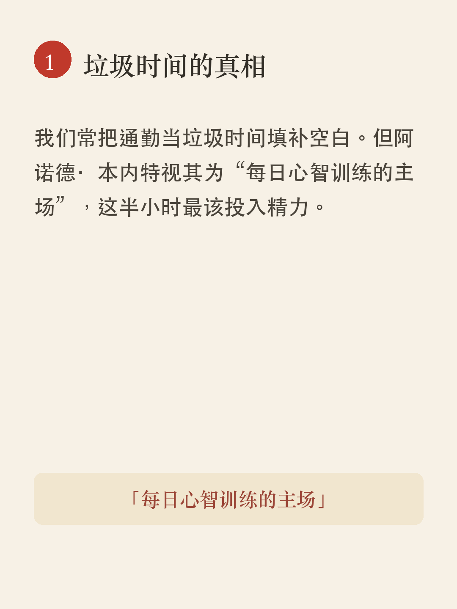
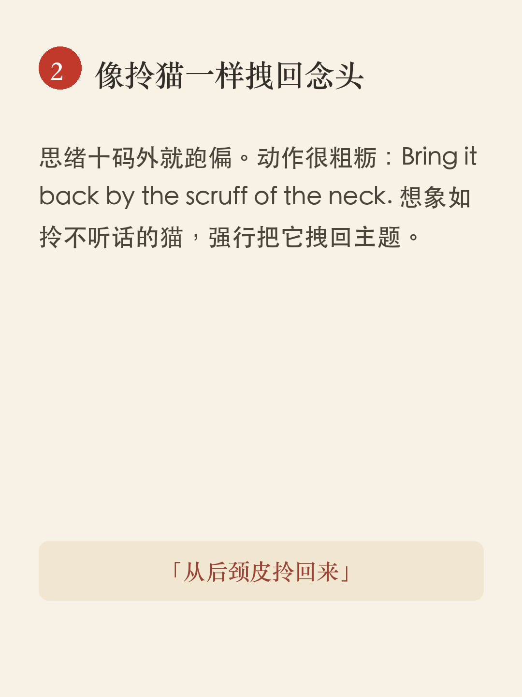
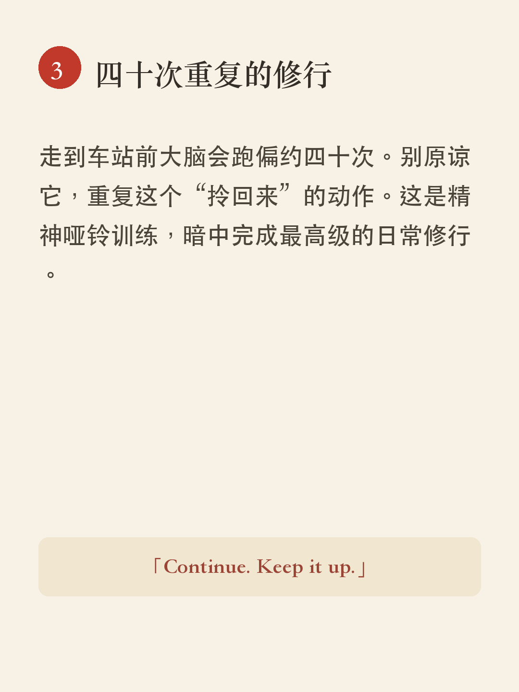
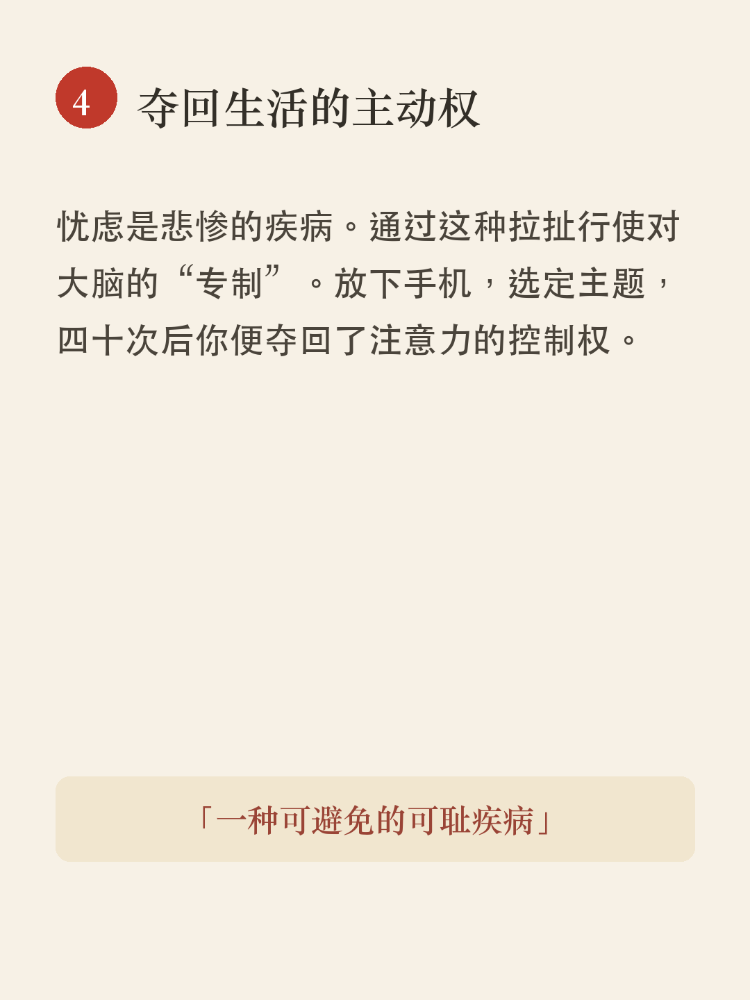
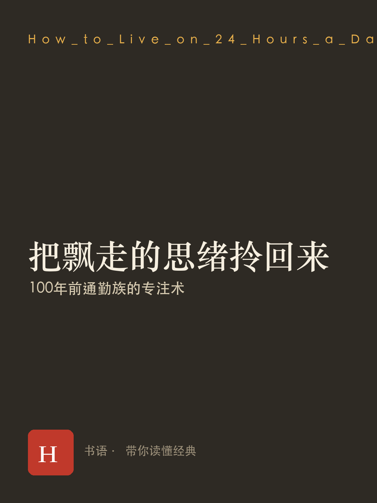
📄 配文·钩子（不剧透）
1908年的伦敦上班族，在煤气灯下对着地铁车厢做了一件怪事：假装拎猫。＋ 讲透版·自成一体（小红书图文）
早高峰的地铁里，我们习惯了把大脑托管给短视频，称之为“休息”。但《如何度过一天24小时》的作者阿诺德·本内特，在1908年给出的解药恰恰相反。
他提出一个极具痛感的动作：Bring it back by the scruff of the neck.（从后颈皮拎回来）。
这不是温和的引导，而是暴力的截断。当你走不出十码思绪就跑去嬉闹时，不要顺着它想，像拎一只不听话的猫一样，强行把它拽回原定主题。走到车站前，大脑跑偏约四十次，你就需要重复这个动作四十次。
这听起来像自虐，实则是“精神哑铃”。现代人焦虑的根源，在于无法控制思维机器。通过这种日复一日的拉扯，你获得的不是知识，而是对大脑的“专制权”。
下次通勤，试着放下手机，盯住一个念头，跑偏就拎回来。四十次之后，你会发现夺回的不仅是注意力，还有对生活的主动权。
口播稿全文
每天早高峰挤在地铁里，你是不是也习惯性地掏出手机？
我们总以为这半小时是“垃圾时间”，用来填补空白，或者给大脑放个假。但《如何度过一天24小时》这本书里有一个极其反直觉的观点：这段从家门到办公室的路，本内特特意留作“心智训练的主场”。
他说，不需要任何工具，甚至不需要一本书。你只需要做一件看起来很笨、很枯燥的事：选定一个念头，然后死死抓住它。
刚开始你会发现自己根本做不到。书里写得特别生动：当你离开家门，强迫自己专注于一件事，不出十码，你的思绪就像个调皮的孩子，瞬间就跑到了另一个话题上，“在街角跟别的念头嬉闹”。
这时候，关键的动作来了。
作者用了一个非常粗粝、甚至带着痛感的动作来描述这种控制力：“Bring it back by the scruff of the neck.”
把它从后颈皮拎回来。
想象一下，你的思绪又飘走了，不要原谅它，不要顺着它想下去，而是像拎一只不听话的猫一样，强行把它拽回原来的主题上。书里估算过，在你走到车站之前，你的大脑大概会跑偏四十次。这意味着，你要重复这个“拎回来”的动作四十次。
不要绝望，作者说：“Continue. Keep it up.” 只要你坚持，你确实能成功——因为如果你不半途而废，就不可能失败。但这是一种需要意志力的练习，而非自动生效的魔法。
这听起来像是一种自我折磨，但作者把它比作“精神哑铃训练”。他说，如果你早上坐地铁时手里提着两个铁哑铃练肌肉，别人会看热闹；但如果你坐在车厢角落，或者抓着扶手，暗中在进行这种最高级的日常修行，没人知道你在做什么。
为什么这么麻烦？因为现代人的痛苦，大半源于无法控制自己的思维机器。我们总说“忍不住想”，但作者反驳道：“人们说‘人无法控制自己的想法’，但其实可以。”
这种训练的核心，不在于你想什么，而在于你拥有“支配”它的能力。通过这种日复一日的拉扯，你能在一天中的任何时刻、任何地点，对大脑行使“专制”。
而最终的回报，直指现代人最普遍的病症——焦虑。作者毫不客气地称忧虑为“一种悲惨的、可避免的、可耻的疾病”，并指出，这种专注的练习，能治愈人生一半的烦恼。
所以，明天早上挤地铁时，试着放下手机。找一个简单的主题，比如一段哲学文字，或者一个待办事项。当思绪再次飘走时，别惯着它，把它从后颈拎回来。
四十次之后，你会发现，你不仅夺回了注意力的控制权，也夺回了对这一天生活的主动权。